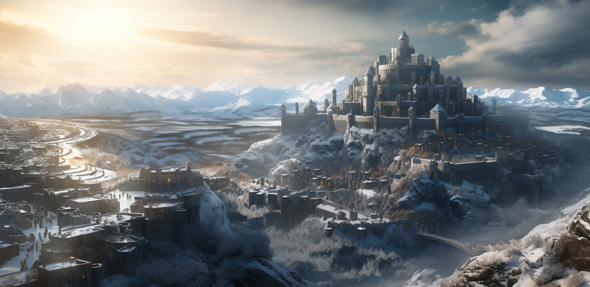

|

Hogar de EscarchaEn el corazón de las inhóspitas Marcas del Norte se alza la fortaleza impenetrable conocida como el Hogar de Escarcha. Esta ciudad capital, envuelta en un manto de frío glacial, rara vez abre sus puertas a los forasteros, manteniendo sus secretos resguardados entre el resguardo de sus altos muros y torres. Para los afortunados que llaman hogar a este bastión gélido, el Hogar de Escarcha es un refugio en medio del brutal clima que azota estas tierras. Sus habitantes, endurecidos por las adversidades del norte, encuentran calor y protección en el seno de sus murallas. Sin embargo, para aquellos que no han nacido entre las heladas brisas del norte, el Hogar de Escarcha se revela como un infierno gélido, donde las inclemencias del clima son tan despiadadas como las propias decisiones que se deben tomar para sobrevivir. En este reducto de hielo, la supervivencia se forja en las llamas de la resistencia al clima y a las dificultades, creando individuos resistentes y aguerridos que enfrentan tanto las plagas que asolan la tierra como las criaturas que se arrastran desde las tierras más allá del norte. El Hogar de Escarcha, con su férreo carácter y su implacable entorno, es un testamento a la tenacidad de aquellos que han aprendido a bailar con la helada muerte que siempre acecha. |
| Galeria |
|---|
|
|